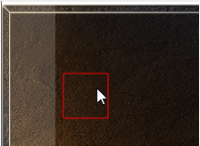

范围大小点击区域
;勾选M2-客户端控制-启用新NPC面板写法生效,不可跟老面板写法混用,仅兼容老写法的文字排版
<Layout|width=50|height=50|color=xx|link=@触发>
--
-- 容器
-- -- width 容器宽度
-- -- height 容器高度
-- -- color 容器颜色
(不写颜色为透明，0-255为专用调整颜色)
-- -- **************************

图上所示：只要是红色区域都能触发！